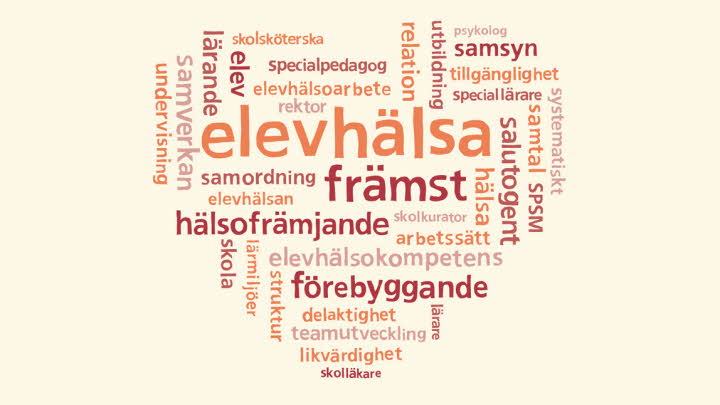

Vi bryr oss mycket om vår barn hälsa ♥

Elevhälsan i vår skolor arbetar med medicinska, psykologiska,
psykosociala och specialpedagogiska insatser.
Det ska i första hand vara ett förebyggande och hälsofrämjande
arbete så att elevens utveckling mot utbildningens mål stöds.
Arbetet utgår ifrån vår samlade kompetens med att vara ett stöd
för både elever och lärare.
På elevhälsan arbetar
specialpedagog, kurator, psykolog och skolsköterskor.
En skolläkare arbetar även inom Elevhälsan och erbjuder
regelbundna mottagningstider.